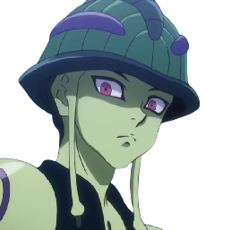

-
Gon
.png)
Descrição
Gon é um um garoto simples e amigável que está em busca de uma aventura. Ele não é bom em matemática. Gon, por ter passado muito tempo em locais selvagens na infância, é capaz de lidar bem com animais. Ele é um Intensificador que são conhecidos como pessoas de personalidade simplistas e que possuem grande determinação. Gon tem sentidos extremamente aprimorados, podendo sentir odor de coisas ou pessoas a longas distâncias. Um dos motivos que levou ele a querer se tornar um Hunter é descobrir o quão profunda e interessante é tal profissão que levou seu pai a abandonar até mesmo a família.
-
Killua
Descrição
Inicialmente, Killua é introduzido como um personagem que parece ser semelhante à Gon, mas diferente, ao mesmo tempo; insolente, alegre e cheio de ideias perversas. Ele também é um dos personagens que pensam mais rápido na série e muitas vezes analisa uma situação com grande facilidade e precisão. Ele tem muita confiança em suas próprias habilidades, muitas vezes, é humilde sobre isso; mas quando alguém o elogia, especialmente Gon, ele fica facilmente envergonhado.
-
Meruem
Descrição
Meruem foi inicialmente visto como um líder cruel e violento. A intenção da rainha de dar origem a uma prole perfeita foi refletida na mentalidade de Meruem, como o Rei Formiga ser altivo em relação a todos. Ele falou de forma eloquente e tinha gostos refinados para uma de suas espécies. Considerou-se superior a todas as outras formas de vida e não sentiu preocupação com a mãe moribunda após o nascimento. Meruem também é implacável, matando e canibalizando qualquer Formiga Quimera que considere desrespeitosa, embora ainda tenha respeito em relação ao forte e entusiasmante Neferpitou por sobreviver a um ataque que matou muitos sem muito dano.